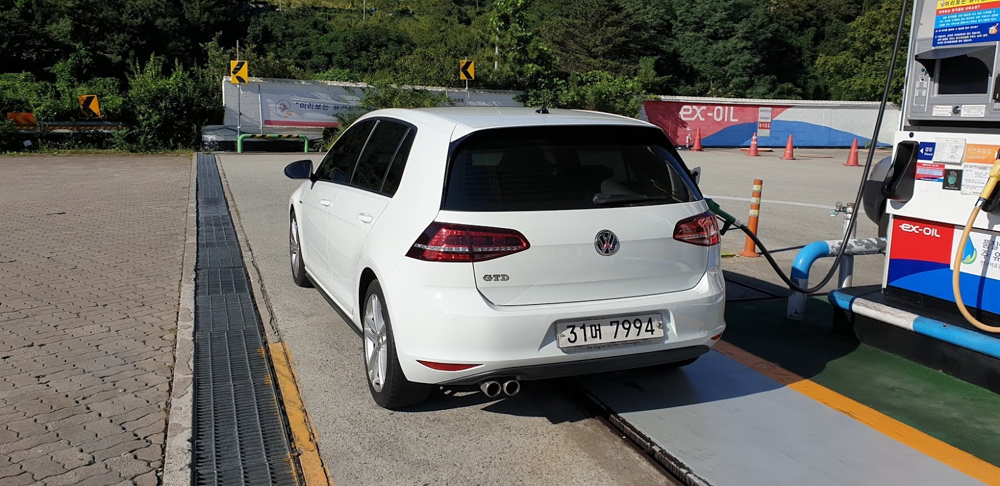
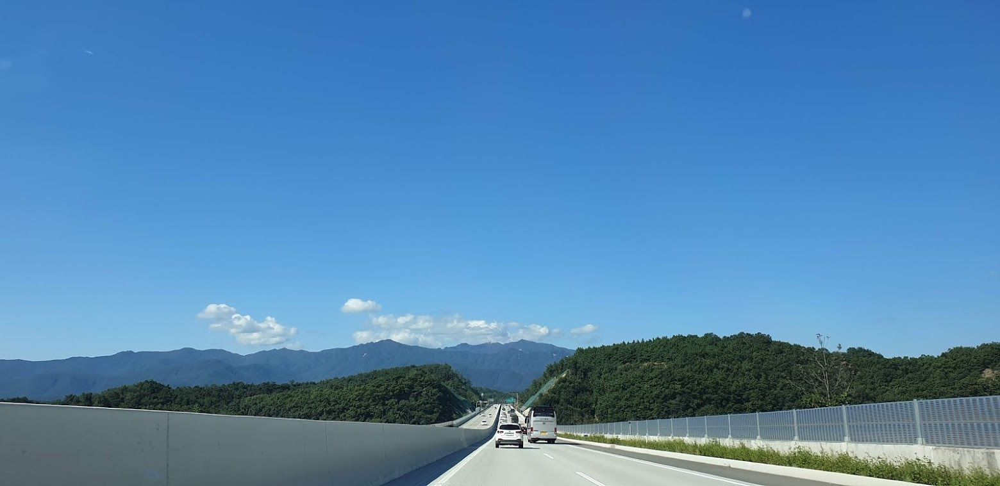
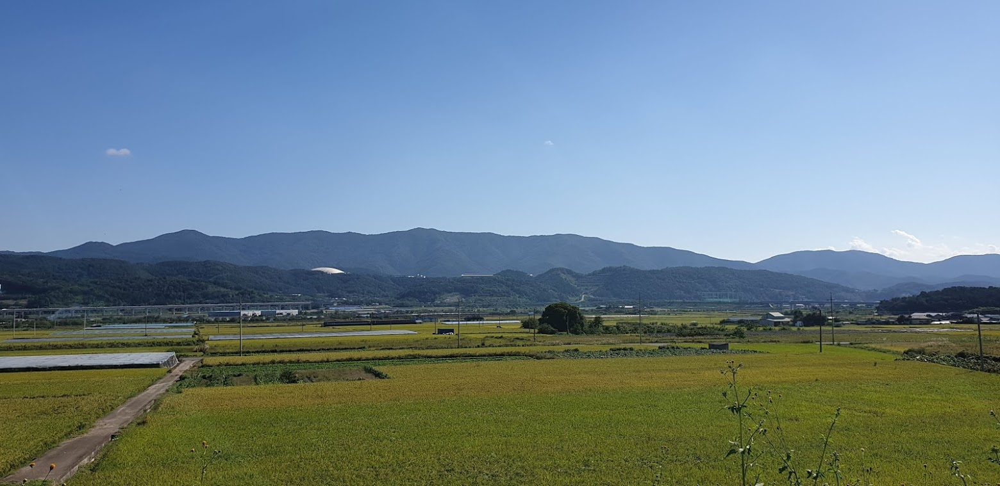
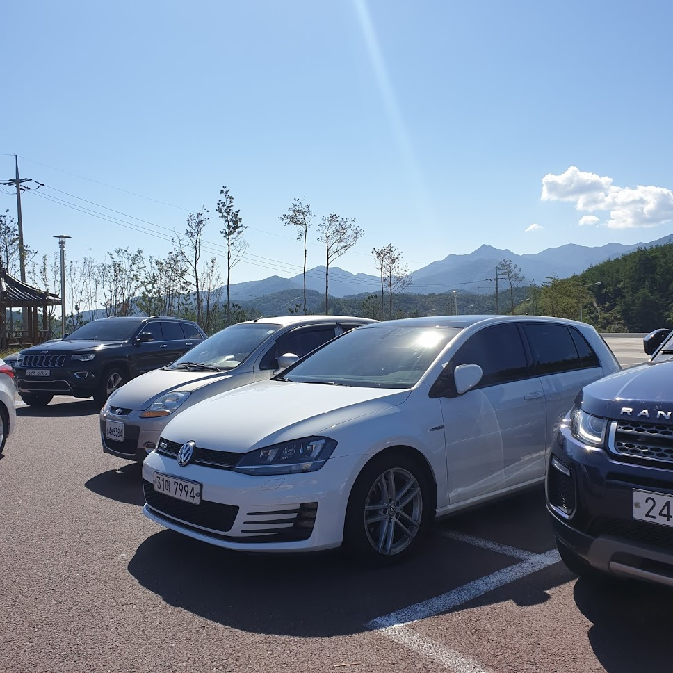
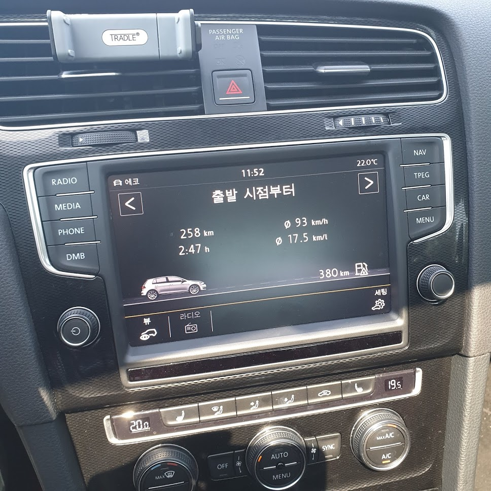

내려올 때는 친구차를 타고 왔는데 올라갈 때는 이 녀석을 직접 운전해서 가야한다. 400km가 넘는 장거리라 첫번째 휴게소에서 주유 후 출발.

맑은 하늘을 보면서 고속도로를 달리니 마치 여행가는 기분이 든다.

잠시 정차하여 가을도 조금 느껴보면서 쉬엄쉬엄 올라가는 중.
힐링이 별건가, 이게바로 힐링이지.

군위 휴게소에서 한 컷.
모드 변경해 가면서 주행중인데 생각 없이 잠깐 밟으면 금방 100km, 차는 아주 잘 나간다.
역시 GTD!

한참 달리다가 연비 체크, 동호회 보면 20km 이상 연비 인증하신 분들도 계신던데 사실 반신반의 했다. 근데 직접 17.5km/l 나온걸 경험해 보니 조금만 신경써면 20km/l 도 가능할 듯 싶다.
마음 한켠에 계속 6세대가 있었는데, 생각보다 빨리 잊을 수 있을 것 같다. 미안하다 6세대…
사랑은 사람으로, 차는 차로 잊는게 맞나보다.
기록 끝.